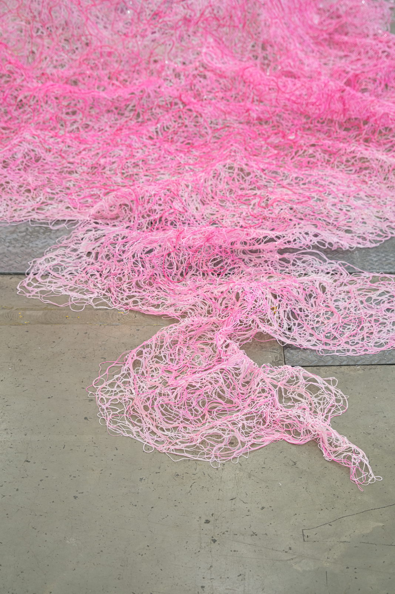

Taipei Dangdai as an important nexus for contemporary art in East Asia, the fair promises four days of discoveries, offering a vital meeting point for regional and international collectors to explore the city’s vibrant art scene and thriving art market.
Reference and excerpt from Taipei Dangdai
Singing Bowl Performance | Sound of Transformation
Julia Hung’s installation Indefinite Pink questions the solidity of stereotype and ideology to promote alternative and harmonious perspectives. A performance activates this installation through the transformative sound of singing bowl, evoking the renewal energy of liquid in motion. It activates the senses and frees the mind to explore.
Indefinite Pink
In Indefinite Pink, Julia Hung questions the rigid boundaries imposed by societal norms, believing that perceivable truths are often nothing more than artificial constructs, waiting to be deconstructed and reimagined.
The installation appears woven in patterns resembling fluid, yet it is composed of strings linked through transparent resin. This deliberate choice dismantles the manual act of weaving, conventionally associated with female labor, and questions its stereotypical connection to femininity.
The outer layer of the installation is pink, a color that only gained its association with femininity in the mid-20th century through marketing strategies. Previously, pink was often considered a masculine color due to its relation to red, which was associated with strength and vigor.
The installation takes the shape of a melting tent or pointy hat, symbolizing the fluidity inherent in human perception. Illuminated from within by a single lightbulb, it evokes a sense of imagination and invites viewers to enter and contemplate within a white inner space. The fluid contour challenges the solidity of ideologies and stereotypes, likening them to vessels containing formless liquid.